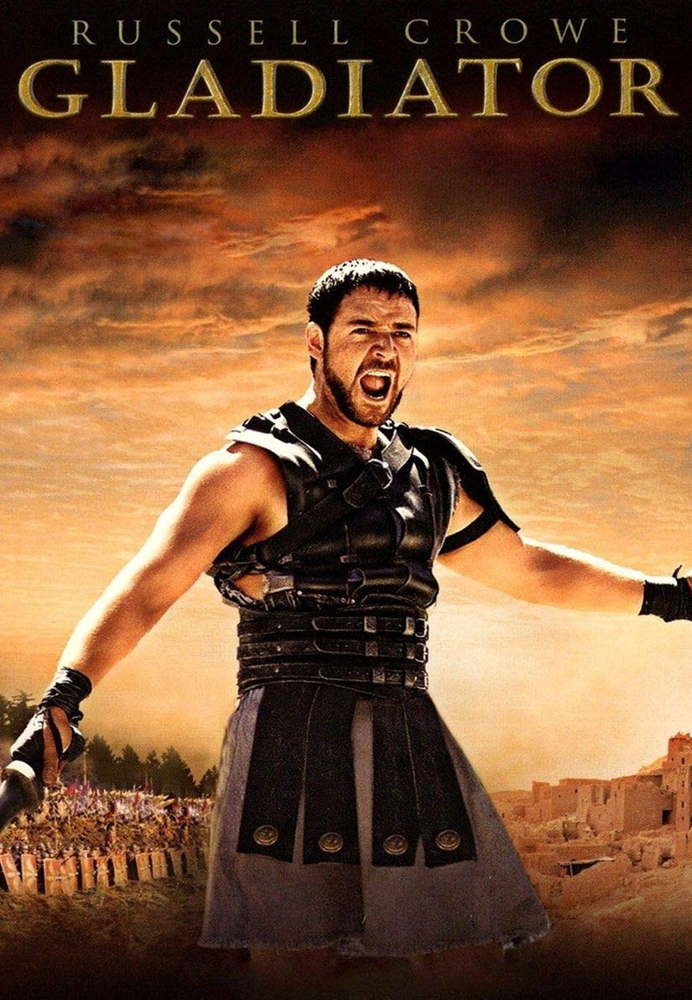
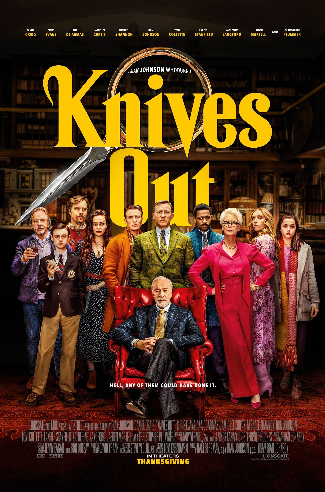

Movies

Inception (2010)
Your mind is the scene of the crimeInception is presents an almost dreamlike perfection. The score, the script, the acting are all just brilliant. The plot, though complex, is nothing short of genius. Inception takes the established format of a heist movie, and puts it in the mindbending context of a dream. An action packed prologue throws the audience into the deep end, which is followed by brief but fascinating exposition to set up the underlying mechanism and premise of the rest of the movie. Inception presents a shady underworld in which there is a drug which allows you to enter someone else's dream. The idea of 'inception' is then the process by which an idea can be implanted within someone's mind in the dream state. The complexity of this concept is made highly accessible by riveting action and solid emotional stakes. With all this in mind, Inception is one of the few movies which gets better with every rewatch.
Score: 9.7/10

The Dark Knight (2008)
You either die a hero, or live long enough to see yourself become the villainThe Dark Knight is undoubtably the greatest superhero movie ever made. That's because it doesn't particularly feel like a superhero movie in the first place. For one, CGI is minimal, with action instead relying on stuntwork and the occasional dramatic explosion. But even action itself is not the driving force of the movie; what elevates The Dark Knight to another level beyond its predecessors is its plot and characters. Instead of clear cut good guys and bad guys, The Dark Knight portrays more shades of grey across all of its characters. One liners and razor sharp dialogue help to create highly dramatic moments, which peaks in the closing dialogue, neatly tying the themes and plot to finish. Overall, The Dark Knight provides a refreshing portrayal of Batman, breaking free of the superhero genre to become an independently top tier movie.
Score: 9.2/10

Gladiator (2000)
A general who became a slave. A slave who became a gladiator. A gladiator who defied an emperor.Gladiator is the definition of an Epic. Acting is sensational, with the obvious highlight being Joaquin Phoenix. Though Russell Crowe may have some naysayers, I rate him. Any other actor may have gone over the top; instead Crowe provided exactly what the role of Maximus required, a character world weary but revenge fueled. The best part about this movie was the script - almost every single line spoken throughout the movie is quotable. My personal favourite: Death smiles upon all of us. The best a man can do is smile back. The plot is strong enough and realistically didn't even need to be too complex - just enough to tie in with the historical context, and complement the overall epicness of it.
Score: 9.1/10

Knives Out (2019)
In for a penny, in for a poundKnives Out is a your quintessential murder mystery, but with a subtle twist. From the very beginning the typical whodunnit formula is stark - a hated, rich father is killed in secluded manor and seemingly everyone has a motive. However, while a solution is presented fairly early, something of a mystery remains, leaving the audience intrigued and compelled from start to finish. The plot is absolutely impeccable, and provides the backbone of the entire movie. Acting is really solid and the soundtrack is used highly effectively. Script is sharp and keeps the pace moving along nicely, especially when considering that a stereotypical murder mystery tends to dawdle through the investigation before the big reveal. Modern details and pop culture references, from Biscoff biscuits to New Yorker articles, also gave a nice contrast to the typical 1900s cliche. Overall, the best murder mystery I've ever seen.
Score: 8.8/10

The Informant! (2009)
Based on a tattle-taleThe Informant is a film unique as it is off-beat, and is what one would loosely describe as a comedy drama. What starts as a story about corporate price fixing as revealed by a whistleblower (Matt Damon), gradually shifts into a story about the whistleblower himself. Matt Damon delivers an outstanding performance, providing terrific monologues throughout the film in addition to his acting, which layered with enough subtlety to keep the audience guessing continually throughout the film whether the character is truly as innocent and naive as he acts. By the end of the film, the equally sheer absurdity and gravity of the events is devestating, especially after realising that this is based on a true story. What made the movie for me was the quote unquote 'twist'. Instead of a big reveal, this twist is something that is gradually revealed, and its only upon reflection that you realise the twistiness of it. SpoilerFirst you realise that Mike Whitacre, the whistleblower, is a pathalogical liar. Then you realise that every single word spoken by Mike Whitacre throughout the entire movie was a lie. Almost every line of dialogue, every word of his monologues... Everything.
Score: 8.5/10

Moneyball (2011)
The first man through the wall always gets bloody. Always.Moneyball takes the typical Underdog Comeback Story, and turns it on its head in the best way possible. Instead of pitting a team against other teams Moneyball pits a baseball general manager against the the system itself. Moneyball swaps cliched teamwork and comradery for intellectual rebellion and boldness. This makes for a much deeper, more interesting exploration of both the characters and the systems of baseball itself. The stakes of Moneyball is tied directly to the Oakland A's GM: Billy Bean, played by Brad Pitt. Importantly, these stakes transition throughout the movie from winning a championship, to changing the very game of baseball itself. While the story itself is interesting, what's even better is the writing. Though not the engine of the movie, the writing works worders to enhance the story in a million different ways. A culmination of all these details help to produce not just a fascinating story, but a story with heart.
Score: 8.5/10